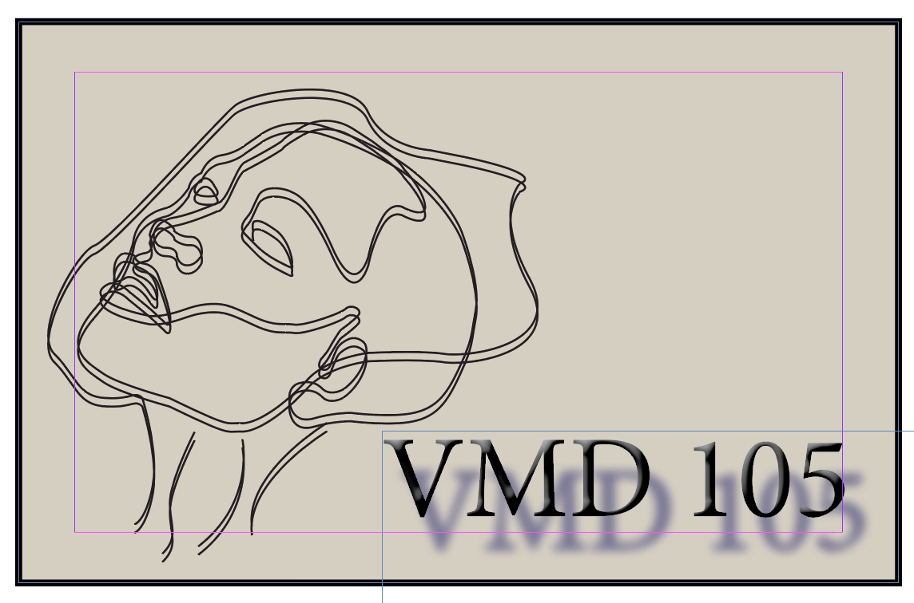

Home | Raster | Vector | Time Base Media | Print Layout | About me | Social Media |
My Indesign Final was a compalation of all my work from this class all done in Indesign! I thought this unit was cool because I got to explore this program and create lots. This final I show you how I spent my time through this Awesome class!